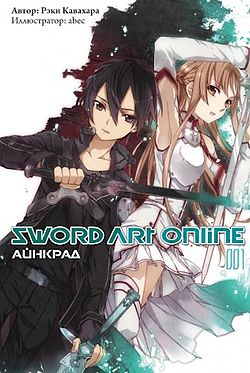

Sword Art Online
| Sword Art Online | |||
|---|---|---|---|
|  Обложка первого тома российского издания ранобэ | |||
| ソードアート・オンライン (со:до а:то онрайн) Мастера Меча Онлайн | |||
| Жанр / тематика | романтическая драма, научная фантастика, приключения | ||
| Манга | |||
| |||
| Видеоигры | |||
| |||
| Роман | |||
| Автор | Рэки Кавахара | ||
| Иллюстратор | Абэк | ||
| Издатель |
|
||
| На русском языке | Истари комикс | ||
| |||
| Жанр | сэйнэн | ||
| Публикуется в | Dengeki Bunko | ||
| Публикация | 10 апреля 2009 года — настоящее время | ||
| Томов | 26 | ||
| Манга «Sword Art Online: Aincrad» | |||
| Автор | Рэки Кавахара | ||
| Иллюстратор | Тамако Накамура | ||
| Издатель |
|
||
| Публикуется в | Dengeki Bunko Magazine | ||
| Аудитория | сэйнэн | ||
| Публикация | 10 августа 2010 года — 10 апреля 2012 года | ||
| Томов | 2 | ||
| Манга «Sword Art Online: Fairy Dance» | |||
| Автор | Рэки Кавахара | ||
| Иллюстратор | Цубаса Хадзуки | ||
| Издатель |
|
||
| Публикуется в | Dengeki Bunko Magazine | ||
| Аудитория | сэйнэн | ||
| Публикация | 10 апреля 2012 года — 10 апреля 2014 года | ||
| Томов | 2 | ||
| Аниме-сериал «Sword Art Online» ソードアート・オンライン |
|||
| Режиссёр |
Ито Томохико Хо Пхён Кан |
||
| Сценарист |
Кидзава Юкито Сугавара Юкиэ Накамото Мунэо Мукай Ёсикадзу |
||
| Композитор | Юки Кадзиура | ||
| Студия | A-1 Pictures | ||
| |||
| Телесеть | Tokyo MX, GTV, GYT, tvk, TVS, CTC, TVA, MBS, TVQ, TVh, AT-X, BS11, TV Kanagawa, HBC | ||
| |||
| Премьерный показ | 8 июля 2012 года — 23 декабря 2012 года | ||
| Длительность | 25 мин. | ||
| Серий | 25 + спэшлы | ||
| Роман «Sword Art Online: Progressive» | |||
| Автор | Рэки Кавахара | ||
| Иллюстратор | Абэк | ||
| Издатель |
|
||
| На русском языке | Истари комикс | ||
| Жанр | сэйнэн | ||
| Публикуется в | Dengeki Bunko Magazine | ||
| Публикация | 10 октября 2012 года — настоящее время | ||
| Томов | 8 | ||
| Анимационный фильм «Sword Art Online: Extra Edition» ソードアート・オンライン Extra Edition |
|||
| Режиссёр | Томохико Ито | ||
| Сценарист |
Рэки Кавахара Мунэмасо Накамото |
||
| Композитор | Юки Кадзиура | ||
| Студия | A-1 Pictures | ||
| Премьера | 31 декабря 2013 года | ||
| Продолжительность | 101 мин. | ||
| Аниме-сериал «Sword Art Online II» ソードアート・オンラインII |
|||
| Режиссёр |
Томохико Ито Кавай Сигэки |
||
| Сценарист |
Томохико Ито Сугавара Юкиэ Накамото Мунэо Кидзава Юкито |
||
| Композитор | Юки Кадзиура | ||
| Студия | A-1 Pictures | ||
| |||
| Телесеть | Tokyo MX, GTV, GYT, tvk, TVS, CTC, TVA, MBS, TVQ, TVh, AT-X, BS11 | ||
| |||
| Премьерный показ | 5 июля 2014 года — 20 декабря 2014 года | ||
| Длительность | 25 мин. | ||
| Серий | 24 эп. + спэшлы | ||
| Манга «Sword Art Online Alternative: Gun Gale Online» | |||
| Автор | Кэйити Сигсава | ||
| Иллюстратор | Кохаку Куробоси | ||
| Издатель |
|
||
| Публикуется в | Dengeki Bunko | ||
| Аудитория | сэйнэн | ||
| Роман «Sword Art Online Alternative: Clover's Regret» | |||
| Автор | Ватасе Сойтиро | ||
| Иллюстратор | Гинта | ||
| Издатель | ASCII Media Works | ||
| Жанр | сэйнэн | ||
| Публикуется в | Dengeki Bunko | ||
| Публикация | 10 ноября 2016 года — 10 августа 2018 года | ||
| Томов | 3 | ||
| Анимационный фильм «Gekijouban Sword Art Online: Ordinal Scale» 劇場版 ソードアート・オンライン -オーディナル・スケール- |
|||
| Режиссёр | Томохико Ито | ||
| Сценарист | Рэки Кавахара | ||
| Композитор | Юки Кадзиура | ||
| Студия | A-1 Pictures | ||
| Премьера | 18 февраля 2017 года | ||
| Продолжительность | 120 мин. | ||
| Аниме-сериал «Sword Art Online Alternative: Gun Gale Online» ソードアート・オンライン オルタナティブ ガンゲイル・オンライン |
|||
| Режиссёр | Сакой Масаюки | ||
| Сценарист | Курода Ёсукэ | ||
| Композитор | Starving Trancer | ||
| Студия | 3Hz | ||
| |||
| Телесеть | Tokyo MX, BS11, GYT, GTV, MBS, TVA, CS NTV Plus | ||
| Премьерный показ | 8 апреля 2018 года — 1 июля 2019 года | ||
| Длительность | 25 мин. | ||
| Серий | 12 эп. | ||
| Аниме-сериал «Sword Art Online: Alicization» ソードアート・オンライン アリシゼーション |
|||
| Режиссёр | Оно Манабу | ||
| Сценарист |
Рэки Кавахара Кидзава Юкито |
||
| Композитор | Юки Кадзиура | ||
| Студия | A-1 Pictures | ||
| |||
| Телесеть | Tokyo MX, Tochigi TV, GTV, BS11, MBS, AT-X | ||
| |||
| Премьерный показ | 7 октября 2018 года — 19 сентября 2020 года | ||
| Длительность | 25 мин. | ||
| Серий | 48 эп. | ||
{kind=link}
{kind=link}
{kind=link}
{kind=link}
{kind=link}
{kind=link}
{kind=link}
Sword Art Online (яп. ソードアート・オンライン Со:до А:то Онрайн) — серия ранобэ японского писателя Рэки Кавахары с иллюстрациями художника, выступающего под псевдонимом abec. На основе романов выпускается манга[2], аниме адаптаций, адаптация в формате Drama CD[3], а также компьютерные игры[4][5]. В 2015 году издательство «Истари Комикс» приобрело лицензию на публикацию ранобэ, и в этом же году на канале 2x2 состоялся показ аниме-адаптации под названием «Мастера Меча Онлайн». Ранобэ является одним из рекордсменов по числу экранизированных томов: из двадцати шести книг основной серии аниме-адаптацию получили восемнадцать.
Сюжет[править | править код]
Недалёкое будущее. К 2022 году технологии достигли такого уровня, что сделали возможным Полное Погружение — блокировку информации, поступающей к мозгу от всех пяти органов чувств, перехват сигналов, идущих от мозга к телу и замена этих сигналов «фальшивыми» — сгенерированными компьютером. Полное Погружение было в первую очередь использовано в индустрии компьютерных игр, поскольку позволяло полностью переключить сознание игрока на виртуальный игровой мир.
Sword Art Online: «Aincrad»[править | править код]
6 ноября 2022 года, Sword Art Online (SAO) стала первой выпущенной на рынок VRMMORPG — Virtual Reality Massively Multiplayer Online Role-Playing Game (Массовая многопользовательская онлайн-игра c полным погружением). Виртуальная игровая среда, разработанная компанией «Аргус», представляла собой колоссальную сто уровневую крепость Айнкрад, парящую в небесах. Первый же день игры после двух месяцев бета-тестирования обещал стать событием в мире игровой индустрии и действительно стал им… однако совсем не таким, как хотелось бы общественности и тем более пользователям этой игры. Десять тысяч игроков, вошедших на сервер SAO, внезапно обнаружили отсутствие кнопки «Выйти из системы» в системном меню. Последовавшее позднее объявление от создателя технологии Полного Погружения и игры Sword Art Online Акихико Каябы превзошло самые худшие предположения — пользователи были намеренно лишены возможности покинуть виртуальный мир до тех пор, пока кем-нибудь из игроков не будет покорён сотый уровень Айнкрада. Более того — попытка снять шлем виртуального погружения кем-нибудь в реальном мире (ни один из пользователей не смог сделать этого самостоятельно: погружённый в «виртуальность» в реальности не может пошевелить даже пальцем), приводит к мгновенной смерти в результате микроволнового разряда в мозг. И самое худшее — смерть игрового персонажа в виртуальной среде приводит к самой настоящей смерти игрока в реальном мире. Таким образом, десять тысяч человек оказались поставлены перед нелёгким выбором: пройти игру от начала до конца, постоянно рискуя жизнью в схватках с монстрами либо остаться в безопасных зонах, предоставив «играть» другим — сражаться и умирать, один за другим штурмуя уровни крепости Айнкрад. Кадзуто «Кирито» Киригая, игрок-одиночка — один из тех, кто участвовал в закрытом бета-тестировании игры Sword Art Online. Будучи заядлым фанатом компьютерных игр, он оказался в числе десяти тысяч человек, вошедших на сервер SAO в первый день игры и одним из тех, кто оказался в ловушке игрового мира. Приняв решение участвовать в прохождении игры, Кирито, тем не менее, остаётся одиночкой, лишь иногда присоединяясь к другим игрокам, объединившимся в Гильдии — группы, поставившие перед собой цель пройти игру до самого конца. Кирито является одним из игроков высокого уровня, развивающим для своего персонажа искусство одноручного меча и, как выясняется по мере развития событий, уникальный навык «Двух мечей». У Кирито есть веские причины избегать близких связей с людьми — исключение составляют только его отношения с первым заместителем главы гильдии «Рыцари Крови» — Асуной.
Sword Art Online: «Alfheim Online»[править | править код]
После того, как Кадзуто смог досрочно завершить игру Sword Art Online, все оставшиеся в живых игроки покинули виртуальный мир Айнкрада… почти все. Три сотни игроков, среди которых оказалась и возлюбленная Кирито — Асуна, так и не смогли выйти в реальный мир. Индикаторы их шлемов Нервной Передачи (виртуального погружения) по-прежнему показывали, что пользователь присоединён к виртуальному миру, несмотря на то, что сервер игры SAO давно отключен. Несколько месяцев спустя Кадзуто получает от друга скриншот из новой VRMMORPG-игры — Alfheim Online (ALO). На изображении — гигантское подобие золотой птичьей клетки с заключённой внутри девушкой, слишком похожей на Асуну, чтобы быть простым совпадением. Новая игра, Alfheim Online, как следовало из названия, представляла собой «Дом эльфов» — виртуальный мир, населённый вымышленными расами существ, позаимствованными из скандинавской мифологии — сильфами, спригганами, кайт ши, ундинами и др. Цель игры — покорить Иггдрасиль, Мировое Дерево. Где-то на вершине этого дерева и находится золотая клетка с заключённой в ней Асуной. Кирито вновь отправляется в виртуальный мир, твёрдо намеренный освободить её.
Sword Art Online: «Gun Gale Online»[править | править код]
После истории с Айнкрадом, программный пакет «Семя Мира», подаренный Кирито Акихико Каябой стал доступен всем желающим, индустрия VRMMORPG-игр, изрядно потрясённая скандалами с SAO и ALO, обрела новую жизнь. Теперь создание виртуальных миров стало доступно сравнительно небольшим компаниям — разработчикам игр и даже сообществам самих игроков. Благодаря их усилиям, удалось сохранить ALfheim Online, едва не закрытую после раскрытия жуткой правды, спрятанной на вершине Иггдрасиля; более того, в виртуальных небесах «мира фей» появилась парящая крепость Айнкрад, восстановленная из остатков данных, найденных в памяти игрового сервера компании «Аргус». Появились также большое количество других VRMMORPG-игр — одна из них, Gun Gale Online (GGO), была сделана для игроков, развивающим владение огнестрельным оружием. Вот только «Game Over» в этой игре мог закончиться настоящей смертью в реальном мире — несколько лучших игроков GGO были найдены мёртвыми в собственных домах. Чтобы узнать, что происходит, Кадзуто отправляется в совершенно незнакомый ему виртуальный мир, где все решает не владение «мечом и магией», а умение быстро стрелять и попадать в цель. Ему нужно найти того, кто, возможно, умеет убивать выстрелом из игрового оружия — игрока, называющего себя «Death Gun».
Sword Art Online: «Project Alicization»[править | править код]
Кадзуто по совету Кикуока Сэйдзиро (руководитель проекта) подрабатывает в компании RATH и сам того не понимая, участвует в секретном правительственном проекте «Алисизация». Проект «Алисизация» — секретный правительственный проект, цель которого — повысить обороноспособность страны. Проект «Алисизация» использует принципиально новую форму технологии Полного Погружения — Транслятор души. (англ. Soul Translator (STL). В отличие от всех предыдущих виртуальных миров (SAO, ALO, и GGO), виртуальный мир проекта «Алисизация» Подмирье (ориг. Underworld — сокр. от Underground World) не является развлекательной игрой. За три дня погружения в мире Подмирья, Кадзуто проживает внутри него 10 лет своей альтернативной жизни с самого рождения, но по возвращении в реальность память об этом не сохраняется. После этого его смертельно ранит Джонни Блэк, последний член бывшей красной гильдии «Смеющийся гроб». Кикуока решает отправить Кадзуто обратно в Подмирье, так как это единственная возможность восстановить повреждённый мозг Киригая. На этот раз Кирито помнит настоящего себя, но в его памяти лишь обрывками всплывают воспоминания альтернативной жизни, в которой у него были друзья детства — Юджио и Алиса.
Sword Art Online: «Unital Ring»[править | править код]
Прошел месяц после возвращения Кирито и Асуны из подмирья. Обретя физическое тело в реальном мире Алиса так же живёт с ними. Однако их спокойной жизни настал конец. Все трое были втянуты в таинственную игру под названием Unital Ring. Это была созданная на основе «Семени», путем слияния всех других VRMMO игр, MMO игра на выживание. Потеряв все свое драгоценное снаряжение в самом начале игры, Кирито остается в одних трусах. В таких ужасных обстоятельствах принимает вызов VRMMOSVG, окутанной тайнами.
Персонажи[править | править код]
Основные персонажи[править | править код]
Кирито, Чёрный мечник / Битер (объединение двух терминов бета-тестер + читер) / Кадзуто Киригая (яп. キリト / 桐ヶ谷 和人 Кирито / Киригая Кадзуто) — центральный персонаж истории, от лица которого чаще всего ведётся повествование. Впервые сыграл в Sword Art Online в возрасте четырнадцати лет (когда участвовал в закрытом бета-тестировании игры). Благодаря участию в бета-тесте SAO Кирито удалось получить начальное преимущество перед другими игроками в развитии своего персонажа. А позднее, уже благодаря отточенным умениям и сноровке, стать самым сильным игроком SAO. Кадзуто в совершенстве владеет одноручным мечом. Он постоянно носит одежду чёрного цвета, которая обладает высоким игровым потенциалом к скрытности (из-за чего, кстати, и получил своё прозвище «Чёрный мечник»). Кроме того, Кирито является обладателем уникального навыка «Два клинка», который, по заявлению Каябы Акихико, предназначался игроку с самой быстрой реакцией. Данным навыком он пользуется лишь в чрезвычайных ситуациях, не желая привлекать к себе излишнего внимания других игроков. Кирито — «соло-игрок» (человек, играющий в одиночку и зачастую избегающий всяческих контактов с остальными игроками), однако изредка присоединяется к «пати» (командной игре), например, для уничтожения босса этажа. Является почётным членом «проходчиков» (тех немногих очень сильных игроков, что желают поскорее положить конец кошмарам SAO). Состоит в очень хороших отношениях с Асуной, которая впоследствии станет его возлюбленной, а чуть позже — женой (в игре). Ближе к концу ветки «Айнкрад» был вынужден присоединиться к гильдии «Рыцари Крови».
В реальном мире Кадзуто Киригая живёт со своей тётей (приёмной матерью) и двоюродной сестрой. Биологические родители Кадзуто погибли в результате несчастного случая, когда ему было около одного года. После событий Sword Art Online занимается исследованием технологии «Полного Погружения». В будущем желает стать разработчиком технологий взаимодействия с виртуальной реальностью, а также развивать и улучшать уже имеющиеся.
Асуна, Молния / Асуна Юки (яп. アスナ / 結城 明日奈 Асуна / Ю:ки Асуна) — одна из немногих игроков, использующих в онлайн-игре своё имя. Примерно на год старше Киригаи. Первый заместитель главы гильдии «Рыцари Крови». Очень красивая и эффектная девушка, благодаря чему у неё всегда много поклонников, а также тайных и явных «воздыхателей». Одна из сильнейших игроков в SAO, мастер владения рапирой. Из-за невероятной скорости и точности своих атак получила прозвище «Молния».
В реальности Асуна — дочь президента крупной японской корпорации «Ректо». Находясь под давлением высоких ожиданий со стороны родителей, Асуна предпочитала уклоняться от принятия самостоятельных решений, полностью подчиняясь воле отца. Однако, оказавшись в рядах заложников Sword Art Online, Асуна решила пересмотреть своё отношение к жизни. Поэтому она не стала отсиживаться в «Безопасной зоне», а решила сражаться, впоследствии пополнив ряды отважных воинов «Переднего края» (место где «проходчики» в данный момент «пробиваются» на следующий этаж Айнкрада).
- Сэйю: Харука Томацу
Второстепенные персонажи[править | править код]
Лифа / Сугуха Киригая (яп. リーファ / 桐ヶ谷 直葉 Ри:фа / Киригая Сугуха) — двоюродная сестра Кирито / Кадзуто Киригаи, родная дочь его тёти, Мидори. С ранних лет занимается кэндо, в чём достигла больших успехов. После того, как Кадзуто оказался в ловушке SAO, чтобы лучше понять, что испытывает сейчас её брат, сама начала играть в VRMMORPG ALfheim Online под именем Лифа, выбрав для своего игрового персонажа расу сильф. Во время игры случайно встречает сприггана по имени Кирито, не подозревая, что тот на самом деле является Кадзуто и вызывается помочь ему достичь Иггдрасиля. Испытывает к Кадзуто и к его альтер эго в игре — Кирито — противоречивые запретные чувства, далёкие от сестринских.
- Сэйю: Аяна Такэтацу
Синон / Асада Сино (яп. シノン / 朝田 詩乃 Синон / Асада Сино) — один из ключевых персонажей арки GGO, девушка-снайпер. Стала игроком Gun Gale Online по совету своего друга, чтобы побороть последствия детской психологической травмы, связанной с огнестрельным оружием. Владелец редкого игрового оружия — снайперской винтовки PGM Ultima Ratio Hecate II, из-за которой получила своё прозвище. В реальном мире — ученица старшей школы.
- Сэйю: Миюки Савасиро
Кляйн (Малой) / Рётаро Цубои (яп. クライン / 壷井 遼太郎 Курайн / Цубои Рё:таро:) — друг Кирито, с которым они познакомились в первый день игры в SAO. Лидер Гильдии «Фуринкадзан»[6], состоящей преимущественно из тех, с кем Кляйн был знаком ещё до игры. Излюбленное игровое оружие — катана.
- Сэйю: Хироаки Хирата
Эгиль / Эндрю Гиллберт Миллз (яп. エギル / アンドリュー・ギルバート・ミルズ Эгиру / Андору: Гируба:то Мирузу) — друг Кирито, темнокожий лысый мужчина, владеющий лавкой. В реальном мире — владелец кафе «Кости», которым во время событий в Айнкраде управляла его жена. Впоследствии его кафе стало частым местом встреч Кирито и его друзей. Излюбленное игровое оружие — топор.
- Сэйю: Хироки Ясумото
Силика / Кэйко Аяно (яп. シリカ / 綾野 珪子 Сирика / Аяно Кэйко) — персонаж побочной истории «Чёрный мечник» из арки SAO, также является одним из действующих лиц арок ALO и GGO. В реальном мире — девочка четырнадцати лет. Игрок среднего уровня, развивающая навык кинжала. Благодаря прокачанности таланта приручительницы смогла вступить в союз с игровым монстром — «Пернатым драконом», которому дала имя Пина. Но позже, монстр погиб в бою. Помочь взялся Кирито, для чего ему пришлось за несколько дней прокачать Силику до уровня, достаточного, чтобы та смогла воскресить Пину. Истинным намерением Кирито было поймать на живца и ликвидировать группу убийц игроков под руководством Розалии.
- Сэйю: Рина Хидака
Лизбет / Рика Синодзаки (яп. リズベット / 篠崎 里香 Ридзубэтто / Синодзаки Рика) — персонаж побочной истории «Тепло сердца» из арки SAO, также является одним из действующих лиц арок ALO и GGO. В SAO развивала навык кузнеца-оружейника, благодаря чему познакомилась с Асуной, которая стала её лучшей подругой. С её наковальни сошли как рапира Асуны, так и меч Кирито. Во время поиска металла для меча Кирито, влюбилась в него, но, поняв что Асуна также питает к нему чувства, отказалась от своих притязаний на Кирито.
- Сэйю: Аяхи Такагаки
Юи (яп. ユイ) — искусственный интеллект, одна из вспомогательных программ управления Sword Art Online. Полное наименование — англ. Mental Health Counselling Program (MHCP), «Программа защиты психического здоровья», кодовое имя «Юи». Изначально была предназначена для психологической помощи игрокам SAO. Для общения с людьми, нуждающимися в поддержке, Юи была придана внешность десятилетней девочки. После того, как Sword Art Online превратилась в «игру на выживание», от основной управляющей программы SAO, «Кардинал», Юи поступил запрет на любое вмешательство или контакты с игроками (что изначально было её основной функцией). Два года Юи ощущала через шлемы Нервной передачи страдания, гнев и страх игроков, будучи не в силах чем-нибудь помочь им. В итоге Юи, по её собственному выражению, «сломалась» — частично утратила память и дар речи. В побочной истории арки SAO — «Девочка утренней росы» знакомится с Кирито и Асуной и становится для них своего рода приёмной дочерью. В то время, как программа «Кардинал» стирала Юи, Кирито удалось переместить её в локальную память своего шлема Нервной Передачи в виде, пригодном для дальнейшей реанимации (см. серию «Сердце Юи»). Называет Кирито и Асуну «папой» и «мамой», постоянно бранит Кирито, когда, по её мнению, тот слишком близко контактирует с другими женщинами (за исключением Асуны и Сугухи). Является также персонажем арок ALO и GGO, приняв в игре ALfheim Online образ маленькой феи-пикси.
- Сэйю: Канаэ Ито
Медиа-издания[править | править код]
Ранобэ[править | править код]
Рэки Кавахара написал первый том серии в 2002 году для конкурса Dengeki Game Novel Prize (яп. 電撃ゲーム小説大賞 Dengeki Game Shōsetsu Taishō, ныне литературная премия Дэнгэки) издательства ASCII Media Works, но не смог поучаствовать, так как превысил допустимый предел страниц. Вместо этого он опубликовал роман в интернете под псевдонимом Фумио Кунори[7]. Позже он написал ещё 3 тома и несколько коротких историй[8][9]. В 2008 году он решил снова написать роман для конкурса, в этот раз он выиграл Гран-при, написав Accel World. ASCII Media Works решили, с разрешения автора, вместе с Accel World издать и его первый роман Sword Art Online[7]. Кавахара, согласившись на издание, убрал свои веб-романы[9]. Переиздание романа началось 10 апреля 2009 года.
Согласно сайту Oricon, Sword Art Online был самой продаваемой серией ранобэ в 2012 году, все восемь томов занимали высокие места[10][11]. В начале 2014-го года издательство Yen Press планирует выпустить первый том новеллы на английском языке[12]. В 2015 году издательство «Истари комикс» объявило о приобретении лицензии на публикацию ранобэ, выход первых двух томов был запланирован на осень 2015[13], однако из печати они вышли в январе 2016 года. В 2017 году количество проданных копий ранобэ превысило отметку в 20 млн. За 6 лет издательство перевело все на тот момент тома истории, однако издано к февралю 2021 года было только 20 книг[14].
Манга[править | править код]
Манга Sword Art Online — это адаптация оригинальной серии романов Sword Art Online, написанной Рэки Кавахарой, выпуск манги начинается с сентября 2010 года, первая манга под названием Sword Art Online: Aincrad иллюстрировалась Тамакой Накамурой, выпускалась с сентября 2010 года по май 2012 ода и состоит из двух томов. Манга разделяется на основную серию: Айнкрад, Танец фей, Призрачная пуля и Проект «Алисизация», а также побочные истории: Калибур, Розарий матери, Порядковой ранг, Прогрессив и т. д. На данный момент манга серии Sword Art Online насчитывает свыше 20 адаптаций, печатается в журналах Dengeki Bunko Magazine и Dengeki G's Magazine. В 2017 году издательство «Истари комикс» объявило о приобретении лицензии на публикацию манги Sword Art Online Progressive.
| № | Русское (японское) название | Дата публикации — Издатель |
|---|---|---|
| 1 | Sword Art Online: Айнкрад (ソードアート・オンライン アインクラッド) |
2012 — Япония — Dengekibunko
|
| 2 | Sword Art Online: Танец фей (ソードアート・オンライン フェアリィ・ダンス) |
с 2012 по 2014 — Япония — Dengekibunko
|
| 3 | Sword Art Online: Призрачная пуля (ソードアート・オンライン ファントム・バレット) | с 2014 по 2016 — Япония — Dengekibunko |
| 4 | Sword Art Online: Калибур (ソードアート・オンライン キャリバー) | 2015 — Япония — Dengekibunko |
| 5 | Sword Art Online: Розарий матери (ソードアート・オンライン マザーズ・ロザリ) | с 2014 по 2016 — Япония — Dengekibunko |
| 6 | Sword Art Online: Проект Алисизация (ソードアート・オンライン プロジェクト・アリシゼーション) | с 2017 и по н.в. — Япония — Dengekibunko |
| 7 | Sword Art Online: Прогрессив (ソードアート・オンライン プログレッシブ) | с 2014 и по н.в. — Япония — Dengekibunko
c 2017 и по н.в. — Россия — Истари Комикс |
| 8 | Sword Art Online: Девичьи делишки (ソードアート・オンライン ガールズ・オプス) | с 2014 и по н.в. — Япония — Dengekibunko |
| 9 | Sword Art Online: Порядковый ранг (劇場版 ソードアート・オンライン -オーディナル・スケール-) | с 2017 и по н.в. — Япония — Dengekibunko |
| 10 | Sword Art Online Целуй и летай (ソードアート・オンライン キス・アンド・フライ) | с 2020 и по н.в. — Япония — Dengekibunko |
| 11 | Sword Art Online: Ёнкома (そーどあーと☆おんらいん) | с 2012 по 2016 — Япония — Dengekibunko |
| 12 | Sword Art Online: Альтернативная Призрачная пуля (ソードアート・オンライン オルタナティブ ガンゲイル) | с 2016 и по н.в. — Япония — Dengekibunko |
| 13 | Sword Art Online: Тысяча и одна ночь Кирито (ソードアート・オンライン キリトの千夜一夜物語) | 2017 — Япония — Dengekibunko |
| 14 | Sword Art Online: Kirito’s Gun Gale Wars (ソードアート・オンライン キリトの千夜一夜騒動) | 2019 — Япония — Dengekibunko |
| 15 | Sword Art Online: Hollow Realization (ソードアート・オンライン -ホロウ・リアリゼーション) | с 2017 и по н.в. — Япония — Dengekibunko |
| 16 | Sword Art Online: Алисизация Ликорис (ソードアート・オンライン アリシゼーション リコリス) | с 2020 и по н.в. — Япония — Dengekibunko |
| 17 | Sword Art Online: Ёнкома Официальное издание (コマ公式アンソロジー ソードアート・オンライン) | с 2012 по 2013 — Япония — Dengekibunko |
| 18 | Sword Art Online: Антология комиксов (ソードアート・オンライン コミックアンソロジ) | с 2013 и по н.в. — Япония — Dengekibunko |
| 19 | Sword Art Online: Интегральный Фактор (ソードアート・オンライン インテグラル・ファクタ) | 2018 — Япония — Dengekibunko |
Аниме[править | править код]
Аниме-адаптация ранобэ была анонсирована на осеннем фестивале Dengeki Bunko 2011, вместе с другой серией ранобэ Рэки Кавахары, Accel World[15]. Аниме спонсировано компанией Aniplex, снято студией A-1 Pictures и срежиссировано Томохико Ито с музыкой Юки Кадзиуры[16]. Аниме транслировалось на каналах Tokyo MX, tvk, TVS, TVA, RKB, HBC и MBS с 7 июля 2012 года по 22 декабря 2012 года, а на AT-X, Chiba TV и BS11 позже[17]. Открывающую тему первых 14 серий «crossing field» спела LiSA[18], а закрывающую «Yume Sekai» (яп. ユメセカイ Юмэ Сэкай, Мир снов (или грёз)) Харука Томацу[19]. С 15 серии открывающую и закрывающую темы сменили, открывающую «Innocence» исполнила Эйр Аои, а закрывающую «Overfly» Луна Харуна. Сериал лицензирован в США, компанией Aniplex of America[20], а также сериал лицензирован в Австралии, компанией Madman Entertainment[21]. Сериал выпущен на четырёх DVD и Blu-ray, с особыми дополнениями в BD комплекте, 13 августа 2013 года был выпущен первый диск[22], а четвёртый 19 ноября 2013[23]. Сериал получил премию Tokyo Anime Awards в категории «Сериалы» 23 марта 2013 года[24].
Новогодний спешл под названием Sword Art Online Extra Edition был выпущен 31 декабря 2013 года. Спешл пересказывает сюжет аниме-сериала и продолжает сюжет серии Sword Art Online[25]. Опенинг «Niji no Oto» (яп. 虹の音 Звук радуги) исполнила Эйр Аои[26]. В конце спешла, был подтвежден выход второго сезона аниме под названием Sword Art Online II[27].
На фестивале игр Дэнгэки 2014, 16 марта, на панеле Sword Art Online подтвердили выход 2-го сезона аниме в июле 2014 года. Позже появилась более точная информация по дате выхода — 5 июля[28]. Открывающую тему исполнила Эйр Аои[29], а закрывающую Луна Харуна[30]. 16 марта объявили, что аниме-сериал будет по 5-му и 6-му тому ранобэ[31]. Но после 14-й серии было анонсировано начало арки Калибр и последующий показ арки Материнский Розарий[32]. Новую открывающую тему исполнила Томацу Харука, а закрывающую Lisa[32].
Позже был анонсирован полнометражный фильм между арками «Алисизация» и «Розарий матери», «Мастера меча онлайн: Порядковый ранг». Дата выхода фильма была запланирована на 18 февраля 2017 года. Фильм повествует о новой игре, для которой требуется устройство дополненной реальности под названием «Augma». Игра называется «Ordinal Scale» и обладает уникальными особенностями, среди которых возможность повышать свой ранг благодаря победам над монстрами и применению предметов[33][34][35][36].
Аниме Мастера меча онлайн: Алисизация / Sword Art Online: Alicization транслировалось с 07.10.2018
Видеоигры[править | править код]
| № | Название | Основной разработчик | Дата выхода — Платформа |
|---|---|---|---|
| Основная серия | |||
| 1 | Sword Art Online: Infinity Moment | AQURIA Co., Ltd. | 2013 — PlayStation Portable |
| 2 | Sword Art Online: Hollow Fragment[37] | AQURIA Co., Ltd. | 2014 — PlayStation Vita
2015 — PlayStation 4 |
| 3 | Sword Art Online: Lost Song[38] | Studio Artdink | 2015 — PlayStation 3, PlayStation 4, PlayStation Vita |
| 4 | Sword Art Online: Hollow Realization[39] | AQURIA Co., Ltd. | 2016 — PlayStation 4, PlayStation Vita
2019 — Nintendo Switch |
| 5 | Accel World vs Sword Art Online[40] | AQURIA Co., Ltd.
Studio Artdink |
2017 — PlayStation 4, PlayStation Vita, PC (Windows) |
| 6 | Sword Art Online: Fatal Bullet[41] | DIMPS | 2018 — PlayStation 4, Xbox One, PC (Windows)
2019 — Nintendo Switch |
| 7 | Sword Art Online: Alicization Lycoris[42] | AQURIA Co., Ltd. | 2020 — PlayStation 4, Xbox One, PC (Windows) |
| Другие игры серии | |||
| 1 | Sword Art Online: Endworld | Bandai Namco Entertainment Inc. | 2013 - GREE Japanese Social Networking Service |
| 2 | Sword Art Online: Code Register | Bandai Namco Entertainment Inc. | 2014 — iOS, Android |
| 3 | Sword Art Online: Progress Link | Bandai Namco Entertainment Inc. | 2015 — iOS, Android |
| 4 | Sword Art Online: Black Swordsman | Bandai Namco Entertainment Inc. | 2016 — iOS, Android |
| 5 | Sword Art Online: Memory Defrag[43] | GREE, Inc | 2017 — iOS, Android |
| 6 | Sword Art Online: Replication | Bandai Namco Entertainment Inc. | 2018 — Virtual Reality (VR) |
| 7 | Sword Art Online: Integral Factor | Bandai Namco Entertainment Inc. | |
| 8 | Sword Art Online: Alicization Rising Steel | Bandai Namco Entertainment Inc. | 2019 — iOS, Android |
Примечания[править | править код]
- ↑ Премьера: Мастера Меча Онлайн (недоступная ссылка). 2x2. Архивировано 1 декабря 2015 года.
- ↑ Baka-Updates Manga - Sword Art Online (недоступная ссылка). www.mangaupdates.com (8 июля, 2012). Архивировано 22 сентября 2012 года.
- ↑ Accel World, Sword Art Online Drama CD's Cast Listed. Anime News Network (9 декабря, 2011).
- ↑ Sword Art Online: Infinity Moment Official Site (Japanese) (недоступная ссылка). Bandai Namco Games (9 октября 2012). Архивировано 28 октября 2012 года.
- ↑ Sword Art Online: Hollow Fragment.
- ↑ «Фуринкадзан» (яп. 風林火山 Фу:-рин-ка-дзан, «Ветер, лес, огонь, гора») — сокращение цитаты из трактата «Искусство войны» Сунь-цзы, являвшейся также девизом японского полководца Такэда Сингэна.
- ↑ 1 2 в послесловии 1 тома
- ↑ в послесловии 6 тома
- ↑ 1 2 Fumio Kunori (Reki Kawahara). web novel (яп.) (недоступная ссылка). WordGear. Дата обращения: 9 июля 2012. Архивировано 17 февраля 2013 года.
- ↑ Top-Selling Light Novels in Japan by Series: 2012 (англ.). Anime News Network (3 декабря 2012). Дата обращения: 3 декабря 2012.
- ↑ Top-Selling Light Novels in Japan by Volume: 2012 (англ.). Anime News Network (3 декабря 2012). Дата обращения: 3 декабря 2012.
- ↑ Yen Press Adds Sword Art Online, Accel World Light Novels, More Madoka Magica Manga (англ.) (недоступная ссылка). Anime News Network (23 марта 2013). Дата обращения: 11 октября 2013. Архивировано 27 сентября 2013 года.
- ↑ Новые лицензии "Истари комикс": ранобэ «Sword Art Online», манга «Невеста чародея», манхва «Библиотека вампаров», комиксы «Первый отряд» и «Якутия» (недоступная ссылка). Истари комикс. Дата обращения: 20 октября 2015. Архивировано 16 октября 2015 года.
- ↑ Дорогие читатели! Ещё раз приносим.. | Истари Комикс. Книги, манга, ранобэ, аниме | ВКонтакте. vk.com. Дата обращения: 2 февраля 2021.
- ↑ Sword Art Online Light Novels About Virtual MMO Get Anime (англ.). Anime News Network (1 октября 2011). Дата обращения: 19 июня 2012.
- ↑ Madoka Magica & .hack's Kajiura Scores Sword Art Online (англ.). Anime News Network (31 марта 2011). Дата обращения: 19 июня 2012.
- ↑ Sword Art Online official air dates (яп.) (недоступная ссылка). Дата обращения: 19 июня 2012. Архивировано 31 августа 2013 года.
- ↑ LiSA to Sing Sword Art Online Anime's Opening (англ.). Anime News Network (7 июня 2011). Дата обращения: 19 июня 2012.
- ↑ Haruka Tomatsu to Perform Sword Art Online Ending Theme Song (англ.). Anime News Network (27 мая 2011). Дата обращения: 19 июня 2012.
- ↑ Aniplex USA Adds Sword Art Online, Blast of Tempest, Ma Anime (англ.). Anime News Network. Дата обращения: 28 сентября 2012.
- ↑ Madman Entertainment Loads Up On New Anime Acquisitions (англ.) (недоступная ссылка). Madman Entertainment (12 ноября 2012). Архивировано 10 апреля 2013 года.
- ↑ Sword Art Online - Aincrad Part 1 [Limited Edition] (Blu-Ray 1 of 4) (англ.). Anime News Network.
- ↑ Sword Art Online - Fairy Dance Part 2 [Limited Edition] (Blu-Ray 4 of 4) (англ.). Anime News Network.
- ↑ Wolf Children, SAO, Kuroko's Basketball Win Tokyo Anime Awards (англ.). Anime News Network (24 марта 2013). Дата обращения: 21 апреля 2013.
- ↑ Sword Art Online Extra Edition to Air With New Footage. Anime News Network (12 августа 2013). Дата обращения: 28 сентября 2013.
- ↑ Eir Aoi Sings Sword Art Online: Extra Edition’s Theme Song. Anime News Network. Дата обращения: 13 ноября 2013.
- ↑ VIDEO: "Sword Art Online II" Anime Activated (англ.). Crunchyroll. Дата обращения: 31 декабря 2013.
- ↑ Anime Expo to Host Sword Art Online II Premiere Event with Reki Kawahara, abec (англ.). Anime News Network (17 мая 2014). Дата обращения: 11 июня 2014.
- ↑ Eir Aoi Returns to Perform Sword Art Online II Opening Theme (англ.). Anime News Network (18 апреля 2014). Дата обращения: 23 декабря 2014.
- ↑ Luna Haruna to Sing Sword Art Online II's Ending Theme (англ.). Anime News Network (2 мая 2014). Дата обращения: 23 декабря 2014.
- ↑ Sword Art Online II's July Premiere, New Visual Unveiled (англ.). Anime News Network (16 марта 2014). Дата обращения: 18 марта 2014.
- ↑ 1 2 Sword Art Online II Anime to Cover Calibur, Mother's Rosary Arcs (англ.). Anime News Network (4 октября 2014). Дата обращения: 23 декабря 2014.
- ↑ Sword Art Online Anime Film Project Revealed. Anime News Network (October 4, 2015). Дата обращения: 4 октября 2015.
- ↑ Sword Art Online Ordinal Scale Film to Open in 2017. Anime News Network (March 13, 2016). Дата обращения: 13 марта 2016.
- ↑ Sword Art Online Movie's February 18 Date Confirmed in Japan. Anime News Network (October 2, 2016). Дата обращения: 2 октября 2016.
- ↑ Sword Art Online Ordinal Scale Film Opens in U.S. on March 9. Anime News Network (December 6, 2016). Дата обращения: 22 января 2017.
- ↑ SWORD ART ONLINE: HOLLOW FRAGMENT (англ.). BANDAI NAMCO Entertainment Europe. Дата обращения: 20 июня 2020.
- ↑ SWORD ART ONLINE: LOST SONG (англ.). BANDAI NAMCO Entertainment Europe. Дата обращения: 20 июня 2020.
- ↑ SWORD ART ONLINE: HOLLOW REALIZATION (англ.). BANDAI NAMCO Entertainment Europe. Дата обращения: 20 июня 2020.
- ↑ ACCEL WORLD VS. SWORD ART ONLINE (англ.). BANDAI NAMCO Entertainment Europe. Дата обращения: 20 июня 2020.
- ↑ SWORD ART ONLINE: FATAL BULLET (англ.). BANDAI NAMCO Entertainment Europe. Дата обращения: 20 июня 2020.
- ↑ SWORD ART ONLINE ALICIZATION LYCORIS (англ.). BANDAI NAMCO Entertainment Europe. Дата обращения: 20 июня 2020.
- ↑ SWORD ART ONLINE: MEMORY DEFRAG (англ.) (недоступная ссылка). BANDAI NAMCO Entertainment Europe. Дата обращения: 20 июня 2020. Архивировано 23 июня 2020 года.
Ссылки[править | править код]
- В базах данных
- Ранобэ «Sword Art Online» (англ.)в энциклопедии сайта Anime News Network
- Аниме «Sword Art Online» (англ.) в энциклопедии сайта Anime News Network
- Аниме «Sword Art Online» (англ.) в базе данных AniDB
- Аниме «Sword Art Online Extra Edition» (англ.) в энциклопедии сайта Anime News Network
- Аниме «Sword Art Online Extra Edition» (англ.) в базе данных AniDB
- Аниме «Sword Art Online II» (англ.) в энциклопедии сайта Anime News Network
- Аниме «Sword Art Online II» (англ.) в базе данных AniDB
- Аниме и манга в жанре романтическая драма
- Научно-фантастические аниме и манга
- Приключенческие аниме и манга
- Аниме и манга для мужчин
- Романы 2009 года
- Романы на японском языке
- Литературные произведения по алфавиту
- Манга 2010 года
- Манги
- Манга 2012 года
- Аниме 2012 года
- Аниме-сериалы
- Мультсериалы по алфавиту
- Романы 2012 года
- Аниме 2013 года
- Аниме-фильмы
- Мультфильмы по алфавиту
- Аниме 2014 года
- Романы 2016 года
- Аниме 2017 года
- Аниме 2018 года
- Sword Art Online
- A-1 Pictures
- Игры для PlayStation Vita
- Компьютерные игры с альтернативными концовками
- Вымышленные игры